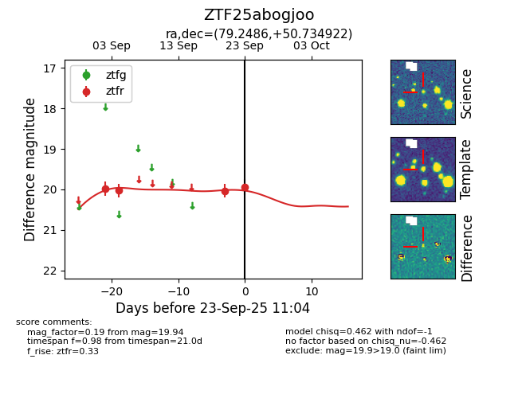
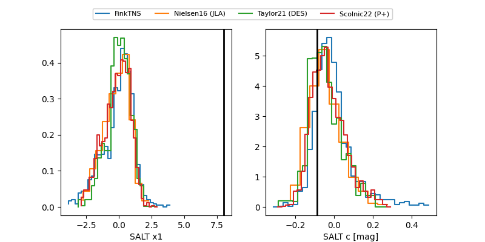

FINK: ZTF25abogjoo
Lasair: ZTF25abogjoo
ALeRCE: ZTF25abogjoo
ZTF25abogjoo (ztf,fink)
equatorial (ra, dec) = (79.2486,+50.73492)
galactic (l, b) = (158.7132,+7.32094)


last ztfr=19.94
4 ztfr detections